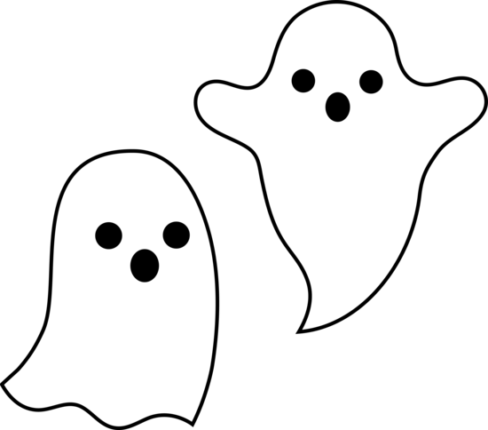
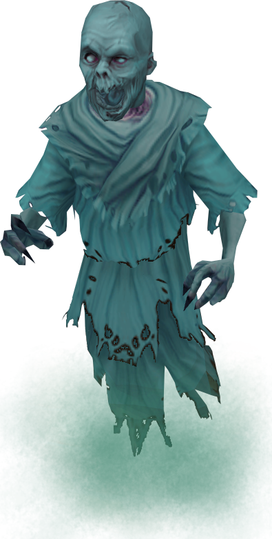

Spöket är en symbol för döda mäniskor som fortfarande är kvar i våran värld och alltid spionerar på oss.
Spöken kan oftast också ses i saker som spel och i filmer fast kan variera massor på dess utseende. Men oftast så är det ett monster under någon typ av vitt lakan.
